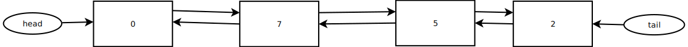
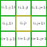

Assignment 3: Deque Fires (35 Pts)
Chris Tralie
Due Tuesday 10/27/2020
Overview / Logistics
The purpose of this assignment is to give you practice designing collections, and to show you how the right collection can make an algorithm implementation (breadth-first search) very efficient. Click here to download the Netbeans starter code for this assignment. When you are finished, please upload Deque.java and ForestFires.java to canvas.
Learning Objectives
- Manipulate public and private variables/methods in classes to accomplish information hiding
- Use multiple methods together in concert, including overloaded methods
- Use multiple classes together in concert to accomplish a task
- Gain experience using information hiding and object references to implement a user-friendly collection class.
- Use object references to perform efficient lookups yielding constant time operations in a collection
Background
In class, we showed how it is possible to remove an item from the front of a singly-linked list in constant time by simply referencing the head. We then showed that if we want to be able to remove a node from the end of the list in constant time, we instead have to store a tail with arrows going backwards instead of forwards. To get the best of both worlds, we can implement a doubly-linked list in which every node has both a pointer to the previous node and to the next node, and there's both a head and a tail:
This allows us to implement a data structure known as a "doubly-ended queue," or a deque for short, in which the options of adding/removing from the beginning/end of the list are constant time. The cost is that we now have to maintain two arrows for every node, but this is a relatively small cost to pay for the functionality it affords.
The data structure itself is pairs well with an algorithm known as Breadth-First Search, which you will use to implement a simple model of spreading forest fires.
Programming Task 1: Deque Implementation (25 Points)
Your job will be to fill in methods to create a functional deque and to maintain its structure. All operations should run in constant time (i.e. no loops) except for toArray() and remove(Item value) methods. You will have to maintain the proper object references to enable this efficiency. You should refer to the LinkedList.java file we wrote in class, though your implementation will differ in several key ways, since the inner node class will have to have both a next and a prev reference (for forward and backwards arrows, respectively), and the main deque class will need to have both a head and a tail.
Lots of information and hints have been provided in comments, but they are repeated below for completeness. Furthermore, it is also possible to implement a deque using an underlying array as the data structure, much like the ArrayList. Though you are expected to implement it using a doubly-linked list, Java has an implementation with an array known as an ArrayDeque with a nearly identical API to the one you'll be implementing here, and you can run the provided file Tester.java to compare your implementation to that implementation to make sure they're doing the same thing. But irrespective of that, it is recommended that you write your own simpler tests in the main method of Deque.java to test the operations you write as you're going along.
-
void addLast(Item value): Add an item to the end of the deque. This method should run in constant time -
void addFirst(Item value): Add an item to the beginning of the deque. This method should run in constant time -
Item removeFirst(): Remove and return the first item from the deque, or returnnullif nothing is there. This method should run in constant time -
Item removeLast(): Remove and return the last item from the deque, or returnnullif nothing is there. This method should run in constant time Item remove(Item value): Remove and return the first occurrence of an item from the deque, if it exists. Otherwise, returnnull. This method does not have to run in constant time, and should probably use a while or do while loop)int size(): Return how many elements are currently stored in the deque. This method should run in constant time. The easiest way to do this is by storing a private variable that tracks the size as different operations are performed.Object[] toArray(): Return an array representation of the items in the deque. If there are N elements, the array should be of length N. Because of some Java weirdness, we have to return an array of typeObjectinstead of typeItem, but every class in Java is a subclass ofObject, so the cast will happen automatically upon assignmentclear(): Clear the entire deque. This should run in constant time (Hint: you should just have to set your head/tail to null, and everything in the collection will be no longer referenced and later cleaned up by the Java garbage collector)
Programming Task 2: Breadth-First Search / Forest Fires (10 Pts)
NOTE: You can proceed to this part as soon as you have finished addLast(), removeFirst(), and size(), even if the rest of your deque is not yet complete.
Once you have a functioning deque, you can use it to implement a widely used algorithm known as Breadth-First Search (BFS). In this assignment, you will use BFS to model the spreading of forest fires from a few initial locations. A tree is represented in the provided Tree.java file along with three states: HEALTHY, ON_FIRE, and BURNT. The file ForestFires.java then arranges a number of Tree objects onto a rectangular grid to represent a forest and performs a simulation of spreading fires. The deque treeDeque holds all of the trees that are on fire at any given point in time. The simulation then proceeds as follows:
-
A tree that is
ON_FIREis removed from the beginning of the deque, it sets all of its neighbors toON_FIRE, unless the neighbor is alreadyON_FIREorBURNT. Every neighbor that is newly set on fire is added to the end of the deque. There are up to 8 neighbors, as shown below (though there will be fewer at the boundaries of the grid)Once the tree has set all of its neighbors on fire, its state is set to
BURNT
In this simulation, only the nodes that are on fire are stored in the deque, and each node that is on fire spreads the fire to its neighbors in constant time. If you've implemented this correctly, you should see an animation that looks something like this when you run ForestFires.java (healthy trees are in green, on fire trees are in red, and burnt trees are in black)
Once you see an animation as above, you are finished what's required for this assignment, but if you'd like to explore more, see how the simulation changes if you consider different types of neighbors. For instance, consider all neighbors in a disc around the point, or consider only the 4 neighbors above/below/left/right.